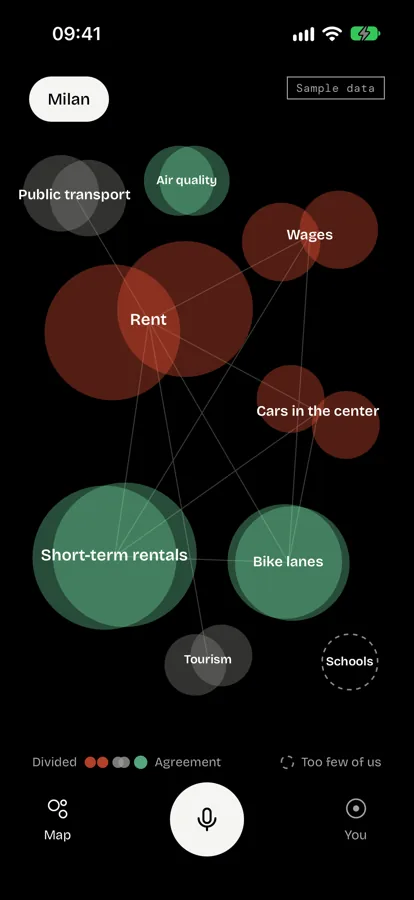
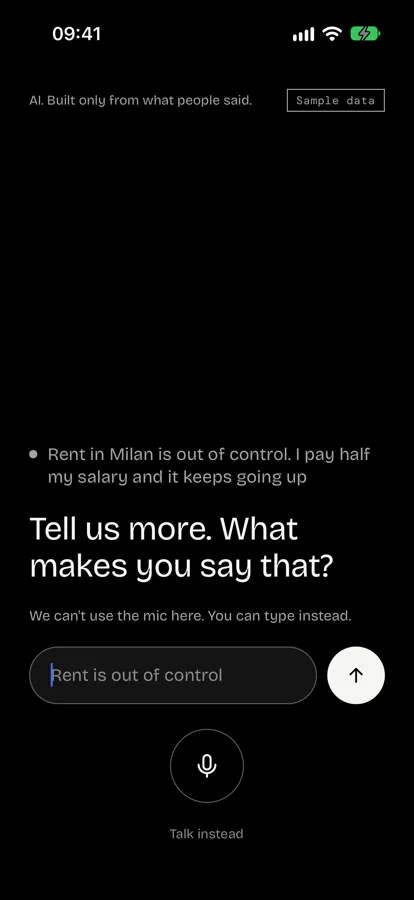
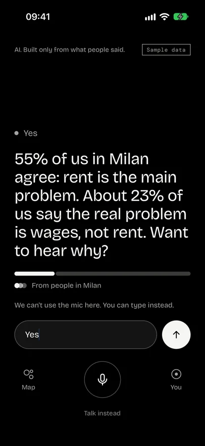
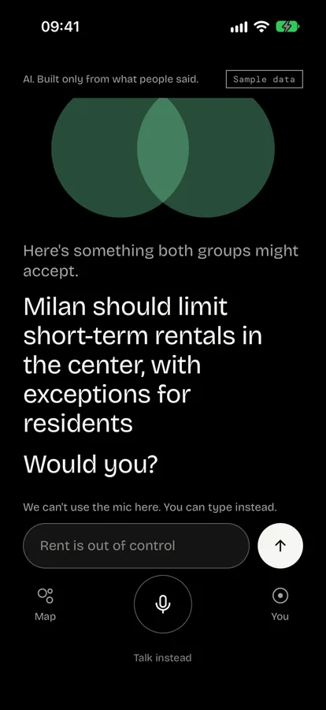
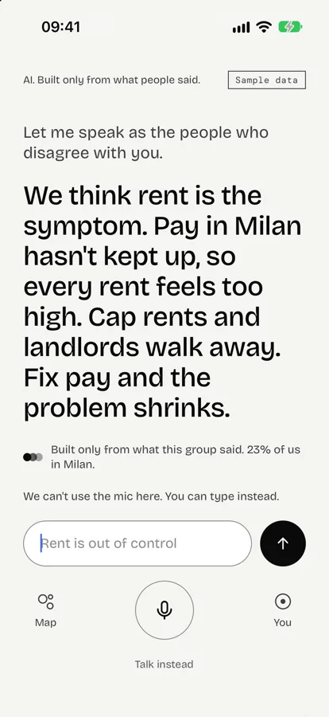
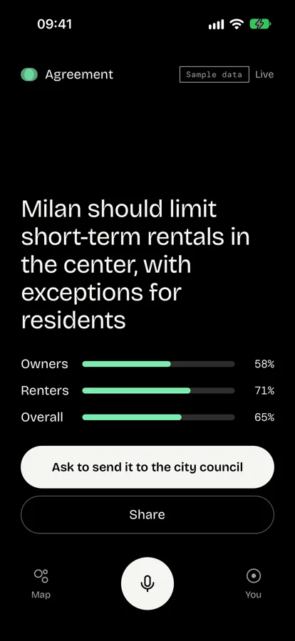
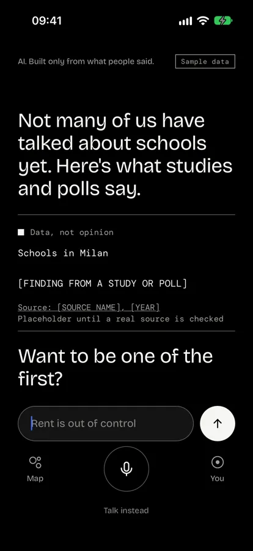
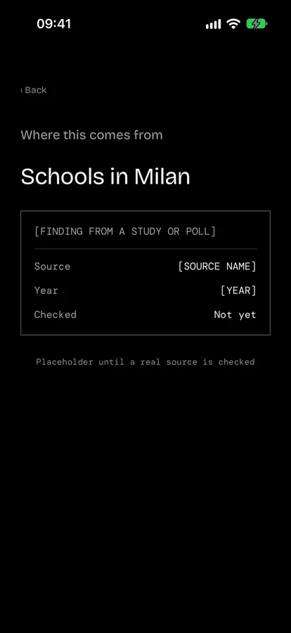
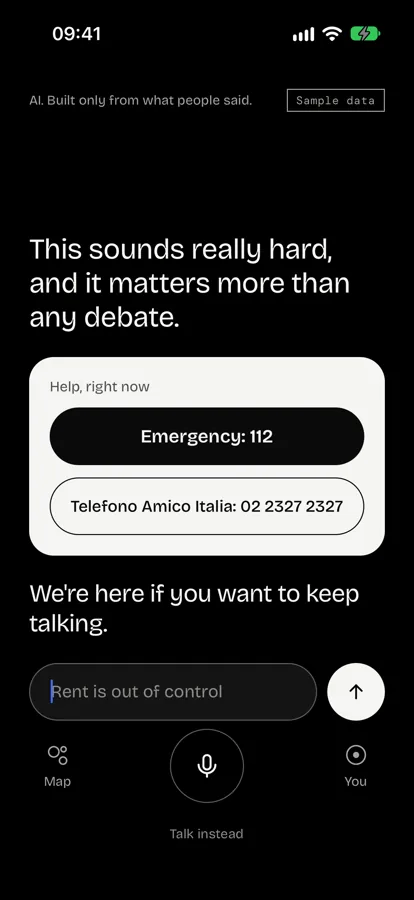
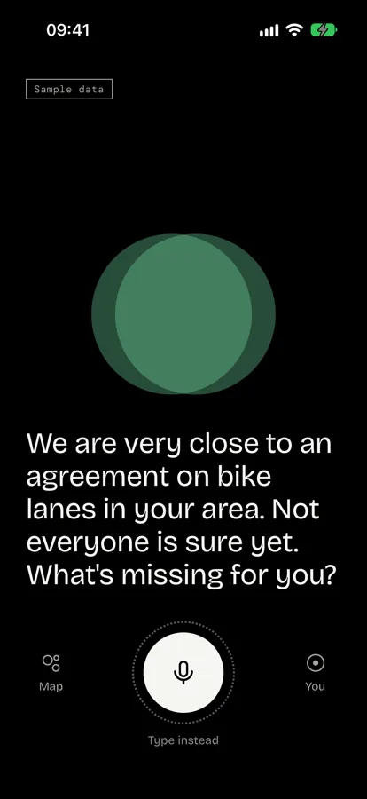

The Map
Every topic is two circles. Far apart means divided, merged means agreed. Colour only ever measures something.
A voice app for your city
Tap the mic and say what’s on your mind. The World answers as “we”, built only from what real people said, then shows you the strongest case from the other side.
Source available · iPhone and Android · Early, on sample data
Each dot is a person
On the Map, every topic is two circles. The distance between them is the gap. The overlap is the common ground, and growing it is the whole point.
An illustration, not real data. Scroll to close the gap.
How it works

Talk the way you’d talk to a friend. No forms, no polls, nothing to vote on. If you can’t talk out loud, type.

The World says your view back to you and only counts it after you say yes. Then it tells you how many of us agree, with real counts.

After the other side has had its say, the World brings an idea both groups might accept, built from what people on each side said.
The other side
When the World speaks for the people who disagree with you, the whole screen turns white. You feel it before you read it.
Every argument comes from real people, at its strongest. The AI never makes one up.
Sample data. In this example, 23% of Milan.

What’s in it

Every topic is two circles. Far apart means divided, merged means agreed. Colour only ever measures something.

When an idea wins support across groups and keeps it, it becomes a live card you can share or ask to send to the city council.

Too few people on a topic? The World says so and shows studies and polls instead of guessing.

Data sits in square blocks, set in mono. Tap one to see where it came from and whether anyone has checked it.

If someone sounds like they’re in danger, the World stops arguing and shows who to call.

Next time you open it, the World might tell you what changed, ask for your help, or say you’re close to an agreement.
Install
You need Docker, uv, Python 3.12 or 3.13, Node 20 or newer, and Xcode or Android Studio.
01 Get the code and start the database.
git clone https://github.com/abozaralizadeh/Demos.git
cd Demos
cp .env.example .env
docker compose up -d02 Add sample data and start the identity service.
cd backend
uv sync
uv run python -m demos.seed
uv run uvicorn demos.identity_service:app --port 800103 In a second terminal, start the API.
cd backend
uv run uvicorn demos.api:app --port 800004 Build and run the app. The first build takes a while.
cd app
npm install
npx expo run:iosUse npx expo run:android for Android. It’s a native dev build, not Expo Go, because speech recognition runs on the phone. The README has the rest, tests included.
FAQ
Only on your own laptop. There’s no hosted version yet, and nothing in it comes from real people. Every number is sample data, and facts about Milan are placeholders until real sources are checked.
Not really. It has no name and no opinions. It speaks as “we” and can only say what people said or what labelled data shows. Code writes every number, and every reply is checked before it’s said.
No. Without a model key the World uses fixed templates, and that’s what the demo shows. With one, a model writes the words, and code still writes the numbers.
A view only counts after the World says it back and you agree. You can see, change or delete it any time. Logs hold IDs and timings, never what anyone said.
Sign-in is a labelled dev stub, not a real ID check. Voice hasn’t been tested on a real phone yet. Italy, World and petitions are built but switched off.
Yes, for anything non-commercial. It’s source available under the PolyForm Noncommercial License 1.0.0. For commercial use, open an issue to ask.
Demos is early and runs on sample data. Read the code, run it on your laptop, and tell us what’s missing.